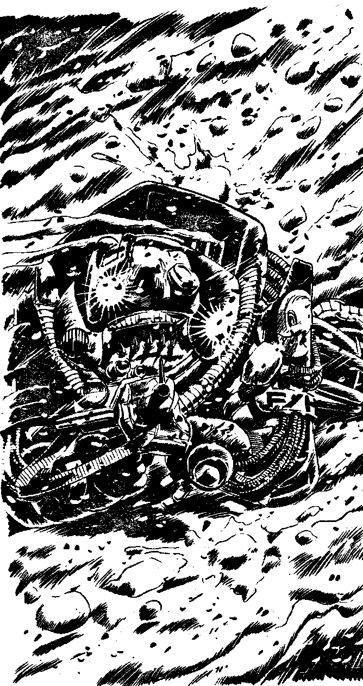

59
[Score a G]
You move around to the other ridge and climb up it. As you reach the top, you can see Achov lying in the very place you were intending to be. The whole thing was a trap! It was hoping you'd go to the cave where it could pick you off from here. Somehow it senses you and rolls over, a laser rifle in its hand. The face inside the powersuit is not Achov's any more, it is something else, something you are glad not to be able to make out properly. You have the initiative. Will you:
Launch a rocket at the thing in Achov's Power
| armour? | Turn to 11 |
| Fire your Particle Disruptor? | Turn to 292 |